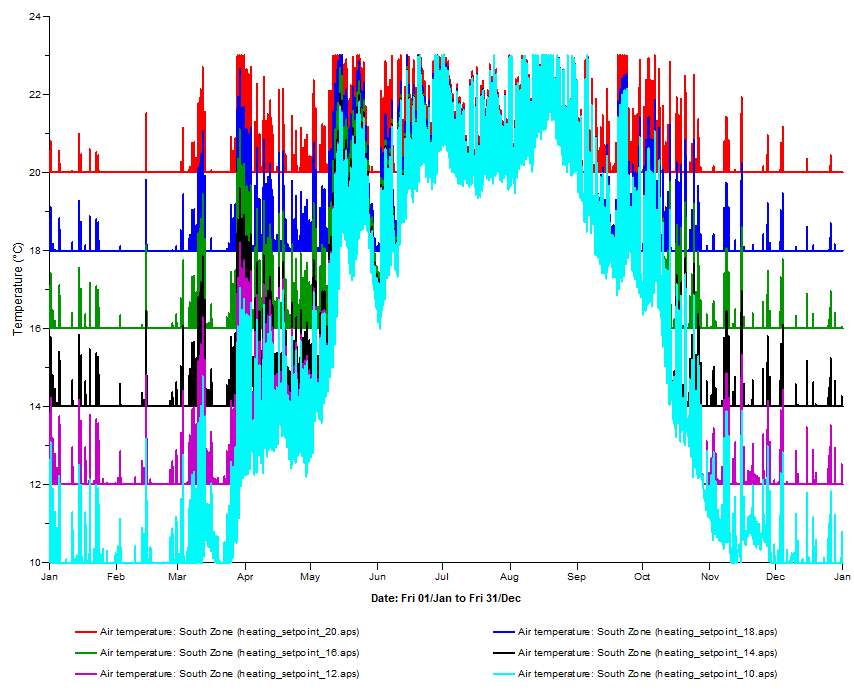

Parametric analysis with heating setpoint
This script:
Changes the heating thermostat setting for each room in the model, iterating through a list of six options.
For each thermostat setting, an ApacheSim simulation is run.
The simulation results are saved as separate .aps results files.
The script makes use of the VERoomData class to edit the heating setpoints and the ApacheSim class to run the simulations.

# ParametricRunThermostat
# Steven Firth, Loughborough University, 2025
# v0.0.1 - 2025-10-20
# This IES-VE Python script
# - Changes the heating thermostat setting for each room in the model, iterating through a list of 6 options.
# - For each thermostat setting, an ApacheSim simulation is run.
# - The simulation results are saved as separate .aps results files.
# Notes
# Possible improvements
# - Show a dialog box with the results filename, so the user can see the progress of the simulations.
# - Allow the user to choose their own heating points using a tkinter form.
print('START')
# Step 1 - Import packages
import iesve
from pprint import pprint
# Step 2 - Get VERoomData instances
currentproject = iesve.VEProject.get_current_project()
realmodel = currentproject.models[0]
bodies = realmodel.get_bodies(False)
# SelectedOnly = False; used to select all bodies in the model.
roombodies = [x for x in bodies if x.type == iesve.VEBody_type.room]
# iesve.VEBody_type.room has an integer value of 1. A list of iesve.VEBody instances.
roombodies_room_data_dict = {
body.id: body.get_room_data(type = iesve.attribute_type.real_attributes)
for body in bodies
}
# {body_id (str): VERoomData instance (iesve.VERoomData)}
# Step 3 - Get original heating setpoints & link to thermal template
original_heating_setpoints = {
body_id: room_data_instance.get_room_conditions()['heating_setpoint']
for body_id, room_data_instance in roombodies_room_data_dict.items()
}
print('original_heating_setpoints:')
pprint(original_heating_setpoints)
#
original_heating_setpoint_from_templates = {
body_id: room_data_instance.get_room_conditions()['heating_setpoint_from_template']
for body_id, room_data_instance in roombodies_room_data_dict.items()
}
print('original_heating_setpoint_from_templates:')
pprint(original_heating_setpoint_from_templates)
# Step 4 - Loop through heating setpoint values, and run an ApacheSim simulation.
for heating_setpoint in [10, 12, 14, 16, 18, 20]: # these can be changed as needed
#
fn_result = f'heating_setpoint_{heating_setpoint}.aps' # the results filename
print('fn_result', fn_result)
#
for body_id, room_data_instance in roombodies_room_data_dict.items():
room_data_instance.set_room_conditions({'heating_setpoint_from_template': False}) # unlink heating setpoint from thermal template
room_data_instance.set_room_conditions({'heating_setpoint': heating_setpoint}) # change heating setpoint for each room
#
s = iesve.ApacheSim()
s.set_options({'results_filename' : fn_result}) # set ApacheSim to use the results filename
s.run_simulation() # run ApacheSim
# Step 5 - Return heating setpoints & link to thermal template to original values
for body_id, room_data_instance in roombodies_room_data_dict.items():
room_data_instance.set_room_conditions({'heating_setpoint_from_template': original_heating_setpoint_from_templates[body_id]})
room_data_instance.set_room_conditions({'heating_setpoint': original_heating_setpoints[body_id]})
print('END')